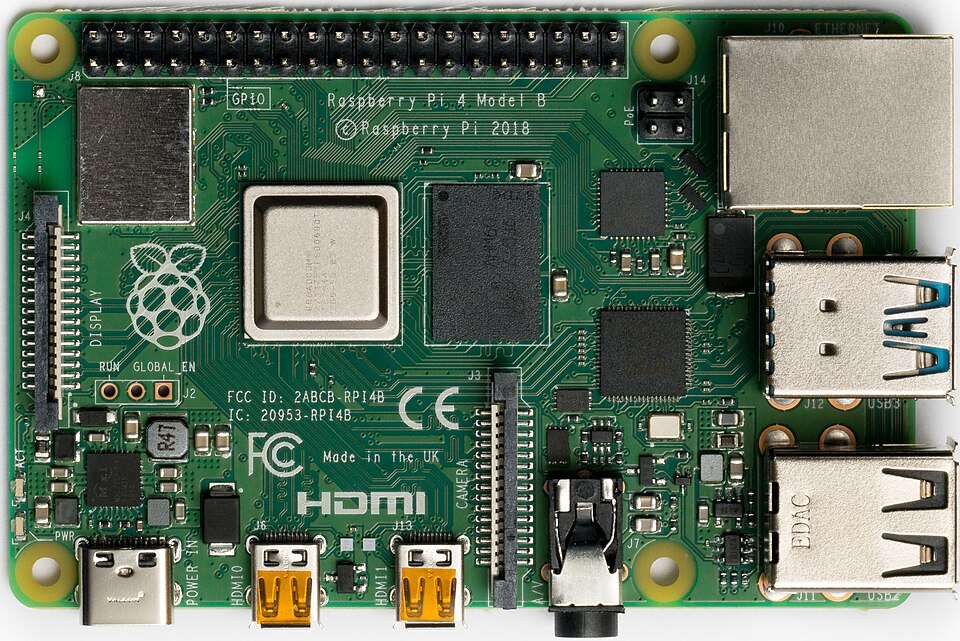

Read a SCADA trend and write a fault handover
The dashboard says the motor is off. The sound in the room says otherwise. Learn to separate the command, the proof signal and the data age before writing a handover.
A spreadsheet or text editor. Optional bench extension uses your own MQTT lab from P30. The sample record below needs no software or service account.
Find the five things a trend needs
Record tag, value, engineering unit, source timestamp and quality. Keep command, feedback and alarm as distinct tags. A front end may show the last known process value after data stops. Use source time, quality and the communications state so the stale value is clear.

Examples of HVAC control hardware. Compare the wired controller terminals with the actuators that physically move valves or dampers. Photo by Mstucky2, hardware courtesy of KMC Controls. Original · CC BY-SA 3.0.


Photo by Laserlicht, resized, with labels added. Original photo · CC BY-SA 4.0.

Watch on YouTube · Look at tag diagnostics and identify where stale or bad status can surface. Inductive University: Tag Diagnostics in Ignition · Inductive Automation.
Watch the vendor lesson · Observe where history is enabled and which settings affect the number of samples. Configuring Tag History · Inductive University.
Diagnose one event from a time series
Use this training capture. An alarm latches when the command is ON for 10 seconds without proof while quality is good. The network check marks samples stale 12 seconds after the last good update.
| Display time | Source time | Command | Proof | Quality | Alarm |
|---|---|---|---|---|---|
| 10:00:00 | 10:00:00 | Off | Off | good | None |
| 10:00:05 | 10:00:05 | On | Off | good | None |
| 10:00:15 | 10:00:15 | On | Off | good | Proof timeout |
| 10:00:20 | 10:00:20 | On | On | good | Latched proof timeout |
| 10:00:35 | 10:00:20 | On shown | On shown | stale | Historical latch |
At 10:00:15 prove the command and proof timeline. At 10:00:35 calculate sample age and ask what is known about the current state. Compare a local input reading on the bench before deciding that the fan or switch has failed. Download the worked trend as CSV.
Create a useful trend on the bench
- Put the commands and switched proof on two separate rows or series. Place the quality changes on the same time axis. Preserve the gap after the last good reading.
- In the P30 setup, publish a known state, stop the publisher and restore it. Note the last source timestamp, the moment the display marks stale and the first good point after reconnection.
- In a deliberately mis-mapped training sheet, display command as feedback. Confirm that the head end appears healthy immediately after Start, then use the physical proof input to expose the mistake.
Look at how a real historian configures sample mode, units and deadband, and how a tag’s displayed value gets its quality. Ignition historian manual.
Send a handover another person can act on
Write: “Requested on at 10:00:05. Proof missing for 10 seconds with good data. Proof appeared at 10:00:20. Source stopped updating after that. Local proof must be checked before replacing hardware.” Include the controller and point IDs, evidence and the owner of the next action. Preserve the actual log when editing the summary.
T34 · Control signals, PLC scans and independent proof
T38 · Time series, bus layers and evidence quality